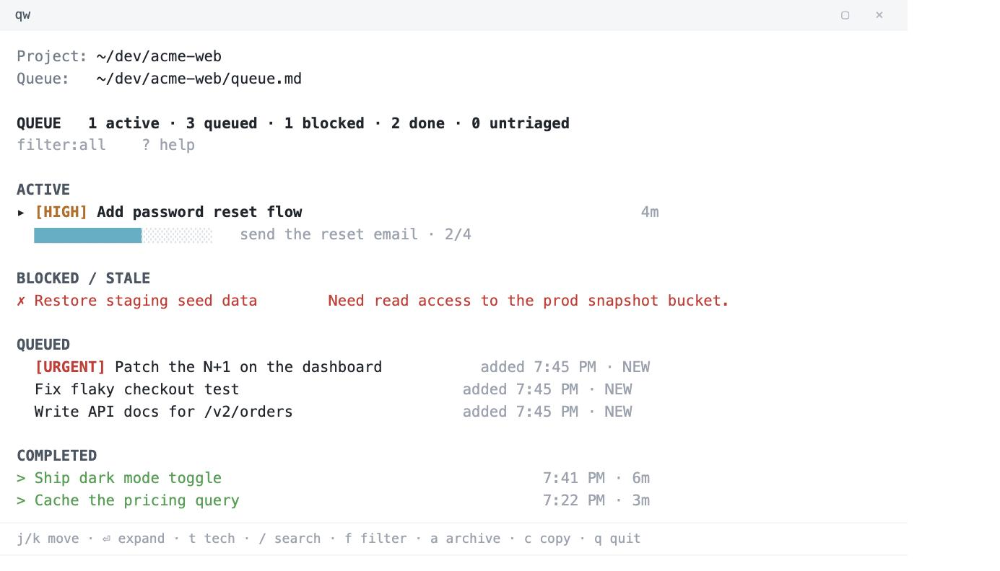

for the Claude Code CLI
Claude Queue
A persistent TASKS.md work queue with a live terminal tracker, a lossless prompt inbox, and plain-English "here's what I finished" summaries. Type /queue, keep feeding it work, and watch progress in a second pane.
Standard-library Python. No accounts, no services, no dependencies. Your queue is a plain Markdown file in your project.

How this is different from an issue tracker
Issue trackers like Linear, Plane, or Jira manage the big picture: epics and issues you plan over days and weeks. Claude Queue works at a different altitude. It lives inside a single Claude Code session, where you pound tasks into the agent as fast as you think of them. It keeps a running list so nothing you asked for gets dropped, and every finished task leaves a short note on what changed. The point is to stay in flow: keep firing ideas at Claude instead of babysitting a checklist or scrolling back to see where things landed.
What it does
- /queue activates queue mode. Claude works the list one task at a time until it's done or blocked.
- Keep typing. Every prompt you send mid-session is captured to a lossless inbox and folded into the queue.
- Honest progress. Substeps get checked off as they're completed, not all at once at the end.
- Readable history. Each finished task stores a plain-English Shipped / Verified summary you can export.
- Live tracker.
taskwatch TASKS.md, a curses TUI with search, filter, priority badges, and per-task detail. - Crash-safe. Atomic, flock-protected state with an append-only log it can rebuild from.
Install
Clone and run the installer. It copies the skill into ~/.claude and the tracker onto your path.
git clone https://github.com/dannygreer/claude-queue.git
cd claude-queue
./install.sh
# verify, then run /queue in any Claude Code session
taskwatch --doctorRequires Claude Code in a terminal (the CLI) and Python 3.9+ on macOS or Linux. The tracker runs in a second terminal pane, so it's built for CLI use, not the desktop or web app.